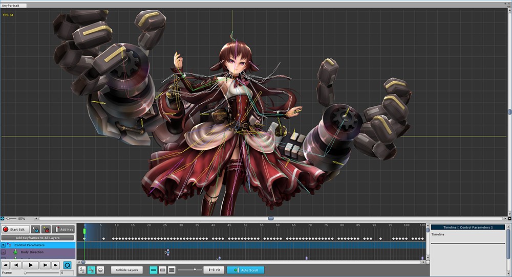
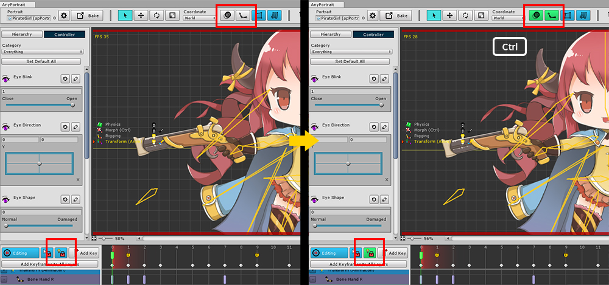

AnyPortrait > 메뉴얼 > 단축키 모음
단축키 모음
1.4.0


공통 단축키
마우스 휠 클릭 후 드래그 : 화면 이동
마우스 휠 스크롤 : 화면 확대/축소
Alt + W : 작업 공간의 크기 최대화
Ctrl + Z : 작업 실행 취소
Ctrl + Y : 실행 취소 재실행
Ctrl + S : 저장
O : 잔상 (Onion)을 보이기/끄기
B : 본을 보이기/끄기 ("전체 보이기" -> "가장자리만 보이기" -> "안보임"의 3가지 상태 전환)
Ctrl + Alt + 마우스 좌클릭 드래그 : 화면 이동
Ctrl + Alt + 마우스 우클릭 드래그 : 화면 확대/축소
F2 : 현재 선택된 대상의 이름을 수정하는 UI로 포커스 이동
~ : 에디터 왼쪽의 Hierarchy 탭과 Controller 탭을 전환
Alt + I : 작업 공간의 배경색을 반전
메시 만들기
마우스 클릭 : 버텍스/선/폴리곤을 선택 또는 생성 / 내부 선을 선택시 방향 전환
Ctrl + 마우스 클릭 : 가까운 버텍스로 스냅
마우스 우클릭 : 작업을 종료하거나 버텍스, 선 삭제
Delete : 선택한 폴리곤 삭제
마우스 드래그 : 선택한 버텍스를 이동 / 피벗(Pivot) 모드시 메시 이동
숫자 1~7 : 메시 편집 메뉴를 전환
Enter : Make Polygon 기능을 실행
본 만들기
Ctrl + 마우스 클릭 : 본을 만들 때 8방향의 각도로 생성
Delete : 본 삭제
버텍스 선택 (메시의 Modify 메뉴, Morph 모디파이어)
마우스 클릭/드래그 : 버텍스 선택
Ctrl/Shift + 마우스 클릭/드래그 : 버텍스 추가 선택
Alt + 마우스 클릭/드래그 : 선택된 버텍스에서 제외
Ctrl + A : 모든 버텍스 선택
객체 편집 화면 (메시 그룹, 모디파이어, 애니메이션)
Q : 선택 툴
W : 이동 툴
E : 회전 툴
R : 크기 툴
[ , ] : Soft Selection / Blur 툴이 켜진 경우 브러시의 크기를 확대/축소
A : 편집모드 켜기/끄기
S : 객체 선택 잠금 켜기/끄기
방향키 : 현재의 툴에 따라 객체를 이동, 회전, 크기를 조금씩 변경. (1만큼 이동 / 1도 회전 / 크기를 ±0.01 만큼 변경)
Shift + 방향키 : 현재의 툴에 따라 객체를 조금 더 많이 이동, 회전, 크기 변경. (10만큼 이동 / 10도 회전 / 크기를 ±0.1만큼 변경)
Enter : FFD 툴이 켜진 경우, 변경 내용을 적용하고 FFD 툴을 종료
Esc : FFD 툴이 켜진 경우, 변경 내용을 취소하고 FFD 툴을 종료
I : 보기 프리셋 켜거나 끄기
숫자 1~5 : 보기 프리셋 규칙 전환
Alt + O : 로토스코핑 켜거나 끄기
숫자 9 : 이전 로토스코핑 이미지 파일
숫자 0 : 다음 로토스코핑 이미지 파일
D : 편집 모드시 여러개의 모디파이어 동작 여부 전환
Alt + D : 편집 모드시 선택 잠금을 해제해도 모디파이어의 대상이 선택되지 않도록 설정
Alt + G : 편집 모드시 모디파이어의 대상이 되지 않는 객체를 회색으로 출력
Alt + B : 편집 모드시, 본의 처리 결과 미리보기
Alt + C : 편집 모드시, 색상 처리 결과 미리보기
Alt + M : 모디파이어 리스트 보이기
Alt + T : Morph 모디파이어 편집시, 버텍스와 핀 편집 모드 전환
애니메이션 제어
F : 현재 위치에 키프레임 생성
Space Bar : 애니메이션을 실행하거나 정지한다.
< : 이전 프레임으로 이동
> : 다음 프레임으로 이동
Ctrl + < : 이전 키프레임으로 이동
Ctrl + > : 다음 키프레임으로 이동
Shift + < : 시작 프레임으로 이동
Shift + > : 다음 프레임으로 이동
Delete : 선택한 키프레임 삭제
Ctrl + C : 선택한 키프레임 복사하기
Ctrl + V : 현재 위치에 복사한 키프레임 붙여넣기
Ctrl + Shift + 타임라인 상단의 빈공간 클릭 : 클릭한 위치로 타임 슬라이더를 이동
Ctrl + 휠 스크롤 : 타임라인을 확대/축소
Page Up : 타임라인을 위로 스크롤
Page Down : 타임라인을 아래로 스크롤
N : Auto-Key 기능을 켜거나 끄기
리깅 모디파이어 편집
Z : 선택된 본에 대한 가중치를 0.02 감소
X : 선택된 본에 대한 가중치를 0.02 증가
Shift + Z : 선택된 본에 대한 가중치를 0.05 감소
Shift + X : 선택된 본에 대한 가중치를 0.05 증가
리깅 모디파이어 페인팅 모드
J : "더하기" 브러시를 선택
K : "곱하기" 브러시를 선택
L : "블러" 브러시를 선택
[ : 브러시 크기 감소
] : 브러시 크기 증가
< : 브러시 세기 감소
> : 브러시 세기 증가
특수키 + 버튼 클릭
Ctrl + 본 보이기/숨기기 버튼 : 본의 출력 방식을 기본과 반대로 전환
Ctrl + FFD 버튼 : FFD 제어점의 개수 직접 지정
Ctrl + 메시 그룹의 메시, 본 보이기/숨기기 버튼 : 선택하지 않은 다른 모든 요소들을 반대로 보이기/숨기기
Ctrl + 모디파이어 잠금 버튼 : 모디파이어 잠금 설정 다이얼로그
Ctrl + Onion Skin 보이기 버튼 : Onion Skin의 고급 설정 다이얼로그
Ctrl + Select Vertices of the Bone 버튼 (리깅 모디파이어) : 버텍스들의 선택이 유지된 상태로 본과 연결된 버텍스들을 선택
Ctrl + Auto Rig 버튼 : 자동 리깅에 적용될 본을 선택하는 다이얼로그
(참고 : Mac OSX에서는 Ctrl 대신 Command 를 이용합니다.)

고급 설정 화면 단축키
Ctrl : 키를 누르고 있으면 고급 설정 화면이 있거나 별도의 작동을 하는 버튼의 색상이 바뀜
(참고 : Mac OSX에서는 Ctrl 대신 Command 를 이용합니다.)